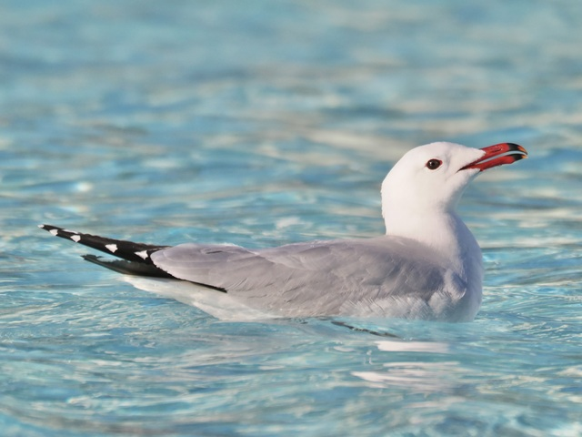
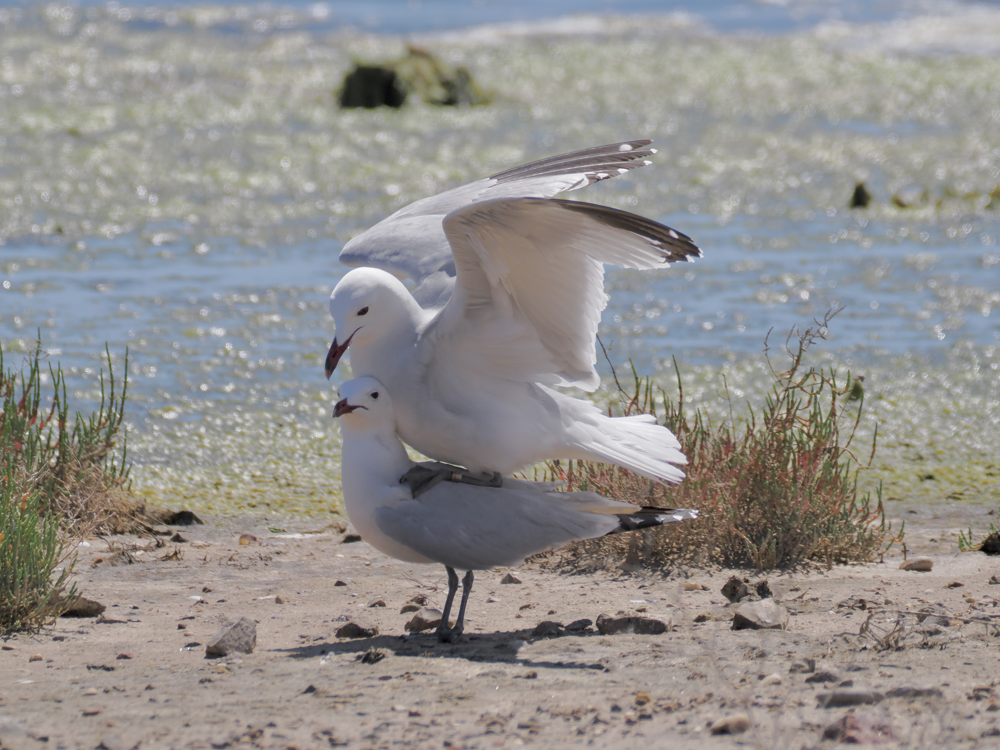

Audouin's Gull
Ichthyaetus audouinii

A medium-sized gull. Bill is red with a black subterminal ring. Dark legs and eyes. Gathers in such large flocks to breed it makes one forget that it is an IUCN Vulnerable species.

This is how babies are made...